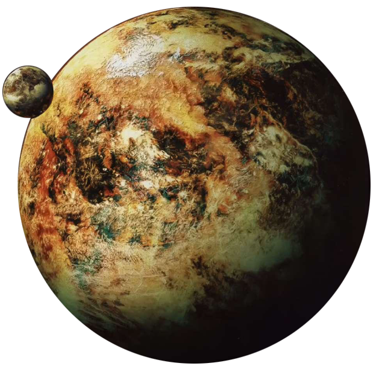

Nal Hutta
nal hutta
Population: 7 Billion
Terrain: Forests, Swamps
Orbital Metrics: 41 3 days per year / 87 hours per day
Languages: Huttese
Major Cities: Bilbousa (capital), Oedriga, Jiguuna
Areas of Interest: Hutt palaces, Nar Shaddaa (moon)
Major Exports: Tourism, Contraband
Major Imports: Consumables, Luxury items, Technology
Astronavigation Data
Trade Routes:
Nal Hutta is the seat of Hutt power in the region, and has been the Hutts’ homeworld for thousands of years since the fall of Varl. A planet of constant schemes and power plays, Nal Hutta thrives on the intrigue that is a daily part of life for the Hutts and their servants.
Fetid swamps and a thick, clinging atmosphere cover the planet. While the air is perfectly breathable by most species, many describe it as inhaling Novarian stew, and respirators are a common sight on offworlders who come to deal with the Hutt Ruling Council (also called the Council of Elders). The moisture and dankness are perfectly acceptable to the Hutts, who delight in the suffering of all beneath them. The various swamplands and bogs across the planet are divided among the great kajidics, though these lands change hands often.
Nal Hutta produces nothing of inherent value to the greater galaxy outside of contraband and limited tourism. Most of the planet’s natural resources have been strip mined to near-depletion, so the Hutts rely heavily on the importation of many materials. These shipments are all ferried through Nar Shaddaa before being brought to the planet’s surface. Hutt paranoia runs deep, and they closely monitor all traffic to their world.
Tensions are high on Nal Hutta as the Hutts consolidate their power base under growing Imperial scrutiny. While the Empire largely leaves the Hutts alone to conduct their business, recent Rebel activity and other actions in Hutt Space have drawn Imperial eyes toward the Hutts, which causes no end of consternation for the crime lords. The council is working hard to ensure that the various Moffs and other Imperial officials in the area are firmly in the pockets of the kajidics.
Sociologists and scholars have attempted to study the intricacies of Hutt political maneuvering for centuries, fascinated by the schemes within schemes laid down by each clan looking to expand or broaden its sphere of influence. There is an old tale that claims that the first tenets of kajidic, established by Budhila Hestilic Amura, are recorded in an ancient tome, one of the rarest and holiest books hidden away by the Ruling Council. Many have sought for proof of this book’s existence and content in hopes of better understanding, and gaining the upper hand on, the Hutts.